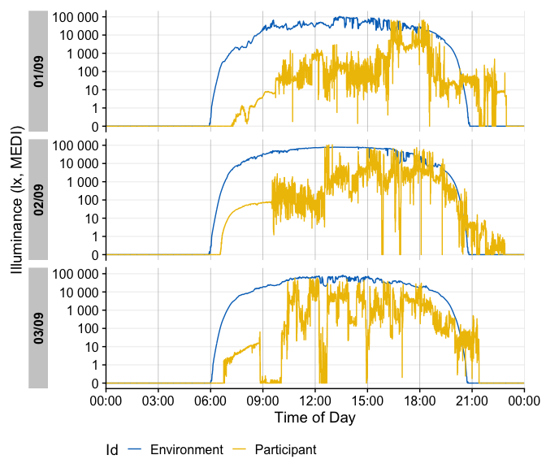

Personalized light exposure data is progressively gaining importance in various sectors, including research, occupational affairs, and fitness tracking. Data are collected through a proliferating selection of wearable loggers and dosimeters, varying in size, shape, functionality, and output format. Despite or maybe because of numerous use cases, the field lacks a unified framework for collecting, validating, and analyzing the accumulated data. This issue increases the time and expertise necessary to handle such data and also compromises the FAIRness (Findability, Accessibility, Interoperability, Reusability) of the results, especially in meta-analyses.
Please note that LightLogR is work in progress! If you are interested in the project and want to know more, please give us a message
LightLogR is a package under development as part of the MeLiDos project to address these issues. MeLiDos is a joint, EURAMET-funded project involving sixteen partners across Europe, aimed at developing a metrology and a standard workflow for wearable light logger data and optical radiation dosimeters. Its primary contributions towards fostering FAIR data include the development of a common file format, robust metadata descriptors, and an accompanying open-source software ecosystem. LightLogR aims to provide tools for:
Generation of data and metadata files
Conversion of popular file formats
Validation of light logging data
Verification of crucial metadata
Calculation of common parameters
Semi-automated analysis and visualization (both command-line and GUI-based)
Integration of data into a unified database for cross-study analyses
LightLogR is developed by the Translational Sensory & Circadian Neuroscience lab, a joint group from the Technical University of Munich and the Max Planck Institute for Biological Cybernetics.
Installation
You can install the development version of LightLogR from GitHub with:
# install.packages("devtools")
devtools::install_github("tscnlab/LightLogR")Example
Here is a quick starter on how do use LightLogR.
library(LightLogR)
#these packages are just needed for the examples as shown.
library(gt)
library(dplyr)
library(ggplot2)Import
You can import a light logger dataset with ease. The import functions give quick, helpful feedback about the dataset.
filename <- system.file("extdata/sample_data_LYS.csv", package = "LightLogR")
dataset <- import.LYS(filename)
#> Successfully read in 11422 observations from LYS-file
#> Start: 2023-06-21 00:00:12
#> End: 2023-06-22 23:59:48
#> Timespan: 2 days
#> Observation intervals:
#> interval.time n pct
#> 1 15 secs 10015 87.689%
#> 2 16 secs 1367 11.969%
#> 3 17 secs 23 0.201%
#> 4 18 secs 16 0.140%
dataset %>% select(Datetime, lux, kelvin, mEDI) %>% slice(7500:7505) %>% gt()| Datetime | lux | kelvin | mEDI |
|---|---|---|---|
| 2023-06-22 07:30:44 | 4 | 2661 | 1 |
| 2023-06-22 07:30:59 | 6 | 3024 | 7 |
| 2023-06-22 07:31:14 | 6 | 3024 | 7 |
| 2023-06-22 07:31:30 | 4 | 2480 | 4 |
| 2023-06-22 07:31:45 | 8 | 2820 | 10 |
| 2023-06-22 07:32:00 | 9 | 2915 | 11 |
Visualize
Once imported, LightLogR allows you conveniently visualize the data.
dataset %>% gg_day(y.axis = mEDI)
#> Warning: Transformation introduced infinite values in continuous y-axis There is a wide range of options to the
There is a wide range of options to the gg_day function to customize the output
dataset %>% gg_day(y.axis = mEDI, col = mEDI >= 250, scales = "fixed")
#> Warning: Transformation introduced infinite values in continuous y-axis
dataset %>%
gg_day(y.axis = mEDI, scales = "fixed", geom = "line", format.day = "%d/%m/%Y")
#> Warning: Transformation introduced infinite values in continuous y-axis ### Reference data The built-in dataset
### Reference data The built-in dataset sample.data.environment shows a combined dataset of light logger data and simultaneous reference data - in this case unobstructed outdoor light measurements. The data can, again, be easily visualized with gg_day. The col parameter used on the Source column of the dataset allows for a color separation between types of data.
sample.data.environment %>%
gg_day(
end.date = "2023-08-18",
y.axis = `MELANOPIC EDI`,
col = Source,
scales = "fixed",
geom = "line")
#> Warning: Transformation introduced infinite values in continuous y-axis With the cut_Datetime function, the data can further be broken up into arbitrary time intervals. This can be used to easily compare different datasets. Just put the function in between the dataset. This makes a new variable available for plotting: Datetime.rounded. Just make sure, that the geom parameter is set to boxplot and the group parameter uses both the info from the rounded time interval (Datetime.rounded) and the different datasets (Source). The interaction function can easily combine them. The default interval from cut_Datetime is 3 hours.
sample.data.environment %>%
cut_Datetime() %>%
gg_day(
end.date = "2023-08-15",
y.axis = `MELANOPIC EDI`,
col = Source,
scales = "fixed",
geom = "boxplot",
group = interaction(Source, Datetime.rounded)) +
theme(legend.position = "bottom") +
coord_cartesian(xlim = c(0, 24*60*60))
#> Warning: Transformation introduced infinite values in continuous y-axis
#> Warning: Removed 3429 rows containing non-finite values (`stat_boxplot()`).